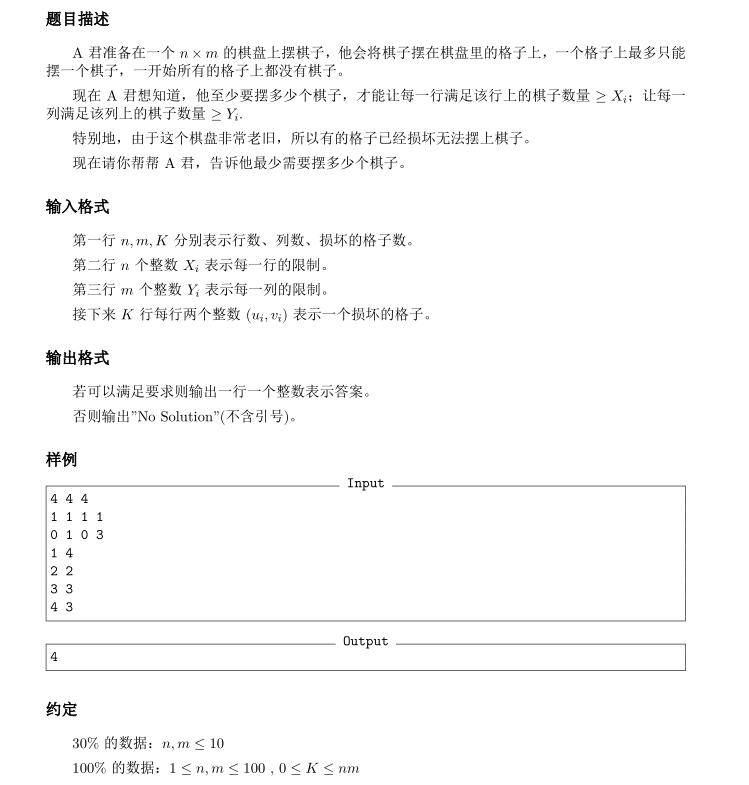

目录
引言
进阶网络流算法
Catalogue:
今天简单地看了一下相对高级的网络流的算法，比如无源汇的有上下界的网络流，什么的，现在就来做一个小小的总结
本文即将介绍的算法如下
- 有上下界的网络流
- 无源汇时的可行流
- 有源汇时的可行/最大/最小流
- 基本模型
- 最小割
- 多源多汇
- 结点容量
- 结点盈余/不足
- 棋盘问题
- 二分图最大匹配
- 位置组合问题
先来介绍一下有上下界的网络流的基本算法
有上下界的网络流
题目概况
这种问题的大致条件一般是这样的，现在对于网络流中的每一条弧，除了原先的有$u$结点，$v$结点，$cap$容量，$flow$流量以外，还增加了两个新的属性：流量的上下界，$low$代表下界，$up$代表上界（其实我们可以直接忽略掉上界$up$，把它直接作为容量$cap$来搞），要求每条弧的流量大小均必须满足在这两个界的之间，然后要求类似于最大流/最小流之类的东西
分析
首先我们先考虑无源无汇的网络
无源汇有上下界网络流
题目概况
首先这样的题目是什么意思。无源无汇的条件即为整个网络流为环状的情况，我们可以发现所有的流都是在这个环中循环移动的，它们就这样一直地，一直地流下去，无休无止。。。直到我们开始做这道题
我们对于这样的题目该怎么搞呢？
我们可以尝试先让所有的弧的流量均达到下界，然后在此基础上为了保证流量平衡而继续增大某些弧的流量（想一想为什么不能减小），下面我们的目的就是构造出一组这样的方案，使得增广完以后每个结点的流量均平衡
我们可以考虑这样一种网络：附加网络，它就表示我们要加入原网络中的流量分布情况，即我们将附加网络与原网络合并以后的新网络满足流量平衡的条件，这样我们便可以求出原网络的一组可行流了
那么该怎么样考虑这个附加网络呢？
我们现在已经人为地使每一条弧都达到了它们的下界，并且导致了流量不平衡的情况（当然出于偶然性而平衡的那些情况本处不考虑），现在就要构造这个附加网络。我们可以发现，现在由于有些弧有流量，而一些没有，会导致一些结点的流入量与流出量严重不符，这样，我们可以通过“多退少补”的思想，来构造附加网络，具体如下：
Step 1：
我们定义结点的总流入量：$In(x)$ ，结点的总流出量：$Out(x)$ ，偏移量：$R(x)$
由于流出量与流入量情况对称，所以我们先只考虑流入量
对于每一个结点的流入量，我们想把它在附加网络中平衡掉，所以我们希望在附加网络中能够想办法“补齐”这个不平衡的现象，所以我们在附加网络中创建超级源$ss$与超级汇$tt$，每次根据这个流入量，我们从源点$ss$向结点$x$连一条容量为$In(x)$的弧1 ，表示我们希望通过这条弧来补齐不平衡量（想一想为什么要这样连弧）
下面解释这样连弧的原因
原先的网络是一个环状的网络，网络中的流就一直在里面流动，而我们这样做，是为了把原先的网络中的流导出到超级汇中，同时再使用超级源补齐，因为我们一开始已经开了许多弧的下界流量，比如一条弧$A->B$，它的流量下界为$LOW$，则现在$A->B$中已经有了$LOW$的盈余量，而在最终的平衡状态下，$B$点的出弧（实际存在的）也就必然要负担这$LOW$大小的盈余流量，所以我们从$ss$向$B$连容量为$In(B)$的弧（虚拟的），这样我们就可以通过这虚拟的弧向实际存在的弧中通流，使实际的弧达到平衡
注意！这里有一种直观的但却十分易错的连弧方法，即在上述情况下从$B$向$tt$连一条容量为$In(B)$的弧，看起来这样做，我们把多余的流量导出了，使得$B$点的流量平衡了，但仔细想想就会发现，我们是把流量导出到了一条虚拟的弧中，它最后并不能作为结果存在，而真正的$B$的那些出弧还没有流量（因为被虚拟弧导走了，在那时看起来像是平衡了一样），最后结果并不是平衡的
所以，重点就在于这个$R$值，由于会有许多重复的情况，所以我们把所有能累加的都累加起来，能得到$R$的一个计算式，如下：
$R(x)=In(x)-Out(x)$
这样，我们先求出所有结点的偏移量，之后继续下一步的操作
Step 2:
对于每个结点，考察这个结点的$R$值。这个$R$值的正负决定着很多的东西，决定着我们打算向那个方向连弧。原本一个结点它既要连超级源，也要连超级汇，但是我们发现它们可以互相抵消，这样我们只需要连一侧
根据上文的分析结果，我们可以知道当这个$R(x)$值为正的时候，我们应该从$ss$向$x$连弧，反之从$x$向$tt$连弧（想一想，如果这里不明白，请回到上文再看一遍）
然后，对于那些原来就存在于网络中的弧（实际弧），我们令它们的容量为$cap$-$low$，$flow$为$0$，这样，我们就相当于平衡掉了下界，把原问题转化为了一个普通的网络流问题，但其实还是有少许的区别，我们还要进行小小的处理，将在下一步中讲解
我们的弧是连完了，但它一定有解吗？万一还有一些流没有达到平衡条件而导致网络仍然不平衡怎么办？所以，我们只需对超级源和超级汇跑一个最大流，然后判断这个最大流是否与所有正的$R(x)$的和完全相等2，然后由此得出是否无解，这样无源汇的可行流就可以被求出来啦(^o^)/
有源汇上下界网络流
我们可以同时处理可行流/最大流/最小流问题，前述过程中，我们只是探讨了无源汇的情况，而现在我们考虑的是有源汇上下界网络流。其实我们只是需要从原网络中的汇点向原网络中的源点连一条容量无穷大的弧，即可转化为无源无汇问题，然后就可以套用上述过程了
而在前述过程中，我们求出了一个最大流，但这个最大流仅仅用来判断答案，而可以作为答案的一部分的是那条后添加的容量无穷大的那条边，那里面的流记录了在原网络中流通的流的大小，可以用于统计答案
为了求出最大流/最小流在上述过程（Step 1，Step 2）结束后，我们还需要接下来的一步：
Step 3：
这时候我们已经搞定了附加网络的作用，还求出了当前的$Maxflow$，下一步我们就是要继续寻找残余的可改进量了（上一步的过程相当于判断解的存在性，而当前的原网络中肯定还剩下许多的待改进量），我们此时只需要去掉超级源与超级汇，以及与它们相连的弧，这时由于原网络中带有源点与汇点，我们可以直接使用这两个点进行后续增广
可行流
其实这时已经求完了，我们去掉超级源与超级汇以后，我们剩下的部分就一定是可行流
最大流
我们可以直接在残量网络上再跑一遍最大流算法（由$s$到$t$），然后把这个答案与前述步骤答案（即上文的容量无穷大的弧的流量）相加即为最大流，这时的意义即为我们充分利用了残量网络中的残余流量
最小流
由于每条弧都有自己的反向弧，所以我们只要跑一遍由$t$到$s$的最大流即可，这时我们充分利用了反向弧中的残余流量，把尽可能减小的部分都减掉了，所以此时用原答案（即上文的容量无穷大的弧的流量）减去这次的最大流答案即为最小流
下面为有上下界最小流贴上一道例题以及代码作为示范
问题 A: 摆棋子
时间限制: 1 Sec 内存限制: 256 MB

AC代码(ISAP最大流算法)
|
|
注意！！！！
我们在添加弧的时候，一定要看清弧的数量，大部分情况下弧的数量均为$O(n^2)$级别的，而不是$O(n)$的！！！请不要把弧数组大小与点数大小混为一谈！！！（就是因为这点问题卡了一天QAQ，发生了奇异错误3）
那么，到这里这几种网络流基本上就搞完了，下面我们介绍一些常见的模型
基本模型
说起模型，网络流所能产生的模型比比皆是，我们可以惊奇地发现某题竟然可以使用网络流瞬间秒过，或者豁然开朗，否则什么也搞不出来。这时就需要我们不断地总结与归纳常见的模型
最小割
这是一个定理，即网络的最小割等于最大流，这个定力十分重要，我们可以用最大流的方法求解所有的最小割，这就是我们想要看到的
多源多汇
即有不止一个源点和不止一个汇点的网络，这种情况非常简单，我们只需要添加一个超级源与超级汇，就可以将问题转化为单源单汇问题，然后该干嘛干嘛。。。
结点容量
即一种结点上有限制容量的网络，我们只需要将每个点进行拆分，然后用其中一个接受原来点的所有入弧，另一个点用来接收原来点的所有出弧，然后在这两点之间连接一条容量等于结点容量的边即可转化为普通的网络流
结点盈余/不足
这种题目有两种情况，一种是结点允许有多大的盈余/不足，另一种是结点本来就有一些盈余/不足（即流量不平衡的网络流）
对于第一种情况，我们只需要考虑添加点到源汇点的弧即可，如果一个点允许盈余$Rest$，那么我们可以从结点连一条容量为$Rest$的弧到汇点，如果是不足，我们可以由源点向这个结点连弧，这样就转化为了一个普通的网络流问题
对于第二种情况，个人的方法是，我们可以连一些上下界大小相同的弧，即强制这条弧的流量，然后套用有上下界的网络流算法即可
棋盘问题
棋盘应该是二分图的常用模型了，事实上几乎都被考烂了，然而二分图的问题可以很轻松地被网络流搞掉，所以我们常常使用网络流。我们把行视为结点集$X$，把列视作结点集$Y$，然后在位置$(x,y)$操作视作从结点集$X$中第$x$个向结点集$Y$中的第$y$个结点连弧，然后增加超级源与超级汇，再套用网络流模型即可
二分图最大匹配
其实有了上一个的启发，这个应该就十分地容易了，设结点集$X$中某点$A$的权值为$Value_A$，结点集$Y$中某点$B$的权值为$Value_B$，那么我们只要从超级源向$A$连一条容量为$Value_A$的弧，从$B$向超级汇连一条容量为$Value_B$的弧，然后跑一遍最大流即可解决
位置组合问题
这个模型来源于北京市2013年的市（省？）选题中，题目为《水晶》，题目看似与网络流毫无关联，实际上却息息相关，那道题大概是考虑两种位置组合，然后我们只需要搞一个网络，把这两种位置关系加进去，那么我们就可以通过最大流算法什么的求出网络的最小割，这样就解决了问题
那么，本篇详解就到此为止了，如果有什么不足与更新，会另有文章予以补充
那么，再见啦<(￣ˇ￣)/
1. 这里十分关键，也最难理解，一定要仔细看下面的讲解！！！ ↩
2. 注意此处是完全相等，多一点，少一点都不行，而且答案也不可能大于$\sum_{i=1}^n R(i)$，这是因为我们之前向超级源点与超级汇点连弧的时候，所有与$ss$相连的弧的容量$SS= \sum _{e(ss,x)\in E} cap(e)$以及所有与$tt$相连的弧的容量$TT=\sum _{e(x,tt)\in E} cap(e)$满足$SS = TT $，而且这样也说明答案不可能大于$SS$或者$TT$ ↩
3. 奇异错误的定义为在修改某变量时，导致了另一个变量的值的变动，这种错误对初学者来说是致命的，因为这种错误十分奇异，变量在不进行任何运算的情况下被改变，如果不事先了解到这种错误，那么要花费很长的时间才会明白自己是因为数组越界而导致了错误（即本应该被判为$RE$却并没有），因为一定程度下系统允许数组的越界 ↩